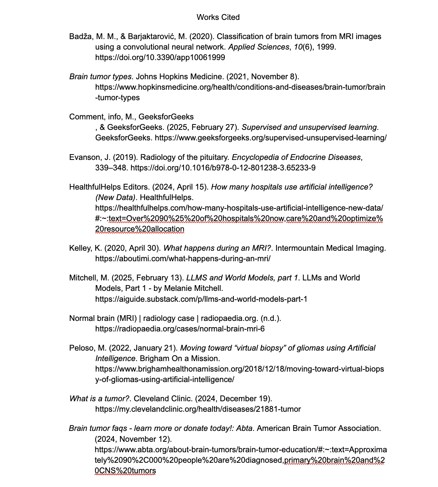

Pixels to Prognosis: Machine Learning in Tumor Detection
Language: Python
Libraries: PyTorch, timm, numpy, pandas, matplotlib, and glob
Abstract: In recent years, Artificial Intelligence (AI)
is innovating the medical field by diagnosing diseases earlier,
offering personalized treatment to patients, and reducing error in hospitals.
This research explores the application of AI in tumor detection through the development of
a machine learning-based program capable of identifying different types of tumors in MRI scans.
The program is designed to assist doctors in identifying tumors quicker with lower error rates.
The program also shows how effortless it is to make a positive impact on our medical care using AI.
Background

What kind of tumor is this? Although I don’t
expect you to know the exact answer to this question,
many doctors are asked this on a daily basis. According
to the American Brain Tumor Association, 90,000 Americans
are diagnosed with a brain tumor each year. This is clearly
a prevalent issue in hospitals, leading to many doctors opting to use AI to assist in diagnosing tumors. Using AI’s and attention to detail, we can
bridge AI with the medical field to improve patient care and promote medical innovation.
What is a Tumor?
According to the Cleveland Clinic, "A tumor, or neoplasm,
is a mass of abnormal cells that form in your body. Tumors can affect
tissues, glands, organs, skin and bone. They can be big or small. You
can have a single tumor or more than one." Tumors are split into two categories: benign and malignant.
Benign tumors are noncancerous,stay localized, and do not spread to other tissues. Malignant tumors are cancerous
and can rapidly spread to other parts of the body (Cleveland Clinic).
Common Types of Brain Tumors
There are three common types of tumors that I focused on for my program. The most common type
is the meningioma with over 30% of tumors being of this type. This tumor forms in the meninges, the
three layers of tissue that surround and protect the brain. Another 33% of all
brain tumors are gliomas. These tumors arise from the glial cells that surround
and support neurons. Lastly, 1 in 10 brain tumors are pituitary adenomas. This tumor forms in the pituitary
gland tissue (John Hopkins Medicine).
Common Symptoms
There are several common symptoms of brain tumors. Depending on the tumor's type and location,
a patient may be able to see the tumor raised above the skin or feel it. There are a few other symptoms
including: fatigue, fever/chills, night sweats, or loss of appetite (Cleveland Clinic). These symptoms
are vague across many diseases, so utilizing AI's attention to detail can help doctors quickly narrow
in issues a patient has.
My Program
I wanted to combine my interest in this topic with my love for programming. I coded my project in Python
and used PyTorch and timm libraries for training. I imported about 5000 labeled images of meningiomas, gliomas,
pituitary, and normal MRI scans. In order to train the model I used a pre-trained model and supervised learning. Supervised learning is when
we import images into a model with labels on the correct description. In my case, my images had the correct type of tumor labeled. These images are given
to the model and the model's job is to guess the type of tumor in the image. After the guess, the model gets the correct answer from the label. Going forward
the model adjusts its answers until it has a high accuracy or it runs through all of the test images.

Results


Just like humans have certainty when answering questions, my model's output is a representation of how confident it is in its
answers. The two images on the right are what my program outputs when prompted with an image.
The MRI scan is the test image, and the graphs show its certainty in the answers. The top image shows a certain
prediction. In this guess, the blue bar shows that the model is 100% certain that there is no tumor in the
MRI scan. Compared to the bottom photo, the model is guessing a few different types of tumors.
After training my model on the 5000 images, I ran through a testing set. Testing set images come from
the same source as the training set. Although they are different images, they will be of the same style and quality
as the training. I ran through 10 testing images, and they were all predicted accurately with nearly 100% certainty
in all of the responses. This shows that AI has the capability of diagnosing tumors with very high accuracy
and speed when trained properly.
I eventually ran into a few setbacks with my model, which helps highlight the issues of using AI for detecting tumors.
After I ran my testing set with high accuracy, I decided to find my own images from outside sources to test. I pulled one MRI scan
per each type of tumor and one for no tumor. These images came from various journal articles. Once the images were run through the model, it was immediately
apparent that the accuracy and confidence of the model dropped. The model was able to guess no tumor and meningioma accurately with 100% certainty. My program
had issues detecting the pituitary and glioma. For the glioma, for example, the model predicted that it was a meningioma with over 60% certainty,
then no tumor with about 35% certainty, and lastly a glioma with a sliver of certainty. The google slides below show the results from the testing set and from outside sources.
Issues with AI
Although AI brings many benefits to the table, it does come with a few setbacks. As my model shows, AI has a hard time
applying its knowledge to images outside of its training set. This can cause many setbacks in the medical field when we consider the fact that
every patient is unique. If we want to make sure that every patient has an accurate diagnosis, the model needs to be trained on tens of thousands (maybe even hundreds) of images.
The model needs to accurately predict all common and uncommon scenarios.
The next issue is that AI lacks transparency. By transparency, I mean that we cannot see what AI "thinks".
When patients go to a hospital and get diagnosed with a disease, they are able to ask the doctor "why". The doctor is then able
to show evidence from tests, symptoms, patient history, etc, that led them to properly diagnose the patient. On the other hand, the AI
will just output the answer with no reasoning or evidence. This wouldn't be an issue if the models had 100% accuracy, but this is rarely the case.
If we need to troubleshoot models we need to know the reasoning behind decisions.

To give an example of what I'm talking about we're going to look at an article from Dr. Mitchell, who has a PhD in AI from
The University of Michigan, called "LLMs and World Models, Part 1". In this article she talks about some of the setbacks of some of the large language
models (LLMs) being built today. One model was used to determine whether a skin lesion is benign or malignant. The model showed promise and had high accuracy when
testing images from the training set. The issues came when they tried new images (similar to what I did with my model).
“[T]he algorithm appeared more likely to
interpret images with rulers as malignant. Why? In our dataset,
images with rulers were more likely to be malignant; thus, the algorithm
inadvertently ‘learned’ that rulers are malignant.”
This model fully encompasses the issues I am trying to highlight. Even if a model has high accuracy,
we may not know if it is guessing correctly for the right reasons. In this case, the skin lesion model
was basically turned into a ruler detector. This may work for most skin lesion images, but this should
not be what the model is relying on.
Looking to the Future
Despite these issues, there is a lot of promise for AI when looking to the future. AI brings
many benefits to the table. If trained properly, AI can transform the way we diagnose diseases and streamline
patient care. With its efficiency, AI can also save doctors time, allowing them to give patients more one-on-one care.
According to HealthfulHelps, as of 2023 about 75% of hospitals in the US have started implementing AI-driven solutions
for their patients. As well as this, about 60% of hospitals are offering AI-based telemedicine so patients can get care from home (HealthfulHelps).
My goals for my program are to help show how a few thousand images and models can revolutionize the way we get our medical care.
Reflection
This program has taught me a lot about how machine learning models work. I learned more about supervised learning,
gathering datasets, and testing my model. I also enjoyed tying my project to the medical field and researching more about tumors.
I believe programs like these are why I chose to go into this field because with the right research and a lot of time, we have the capability
of making programs that can positively impact the lives around us. This connection between AI and the medical field is something I want to dive more into
as I continue my career and I want to make more AI vision projects.
I have attached the slides for my presentation below. For those who don't use GitHub, there is also a slide of the code.
Thank you
Works Cited
